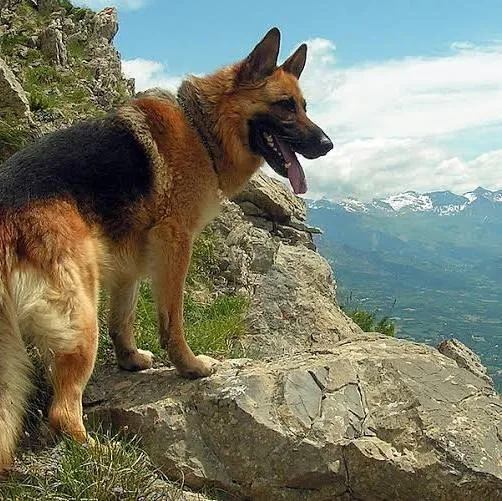

German Shepherd
The German Shepherd,[a] also known in Britain as an Alsatian, is a German breed of working dog of medium to large size. It is characterized by its intelligent and obedient nature.Its historical role was as a herding dog, for herding sheep. It has since been used in many other types of work, including disability assistance, search-and-rescue, police work, and warfare. It is commonly kept as a companion dog, and according to the Fédération Cynologique Internationale had the second-highest number of annual registrations in 2013.[3]The breed was developed by Max von Stephanitz using various traditional German herding dogs from 1899. The breed gained international recognition after the end of World War I. The German Shepherd became the second most popular breed in the US in 2016 and the most frequently registered breed in other countries.
learn more